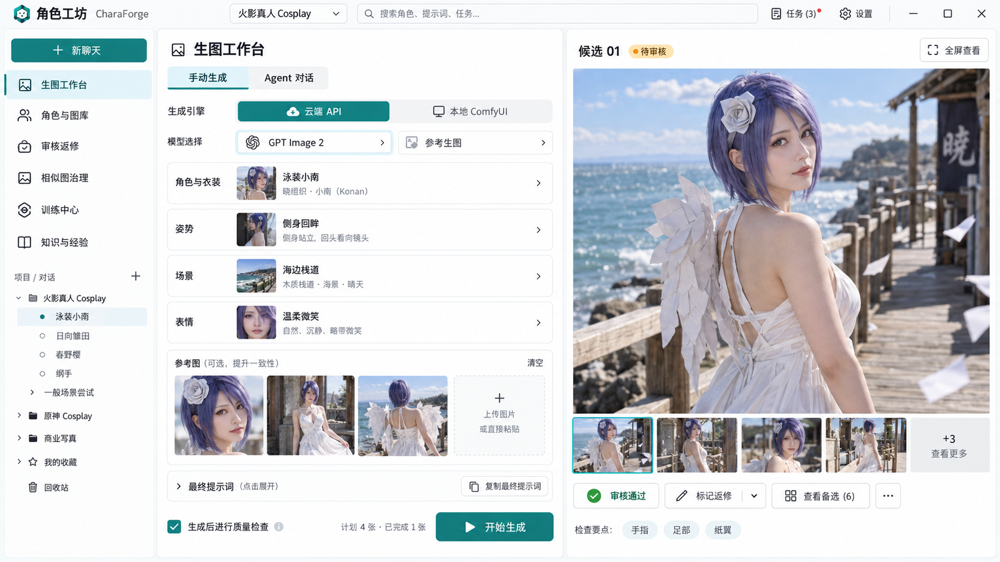
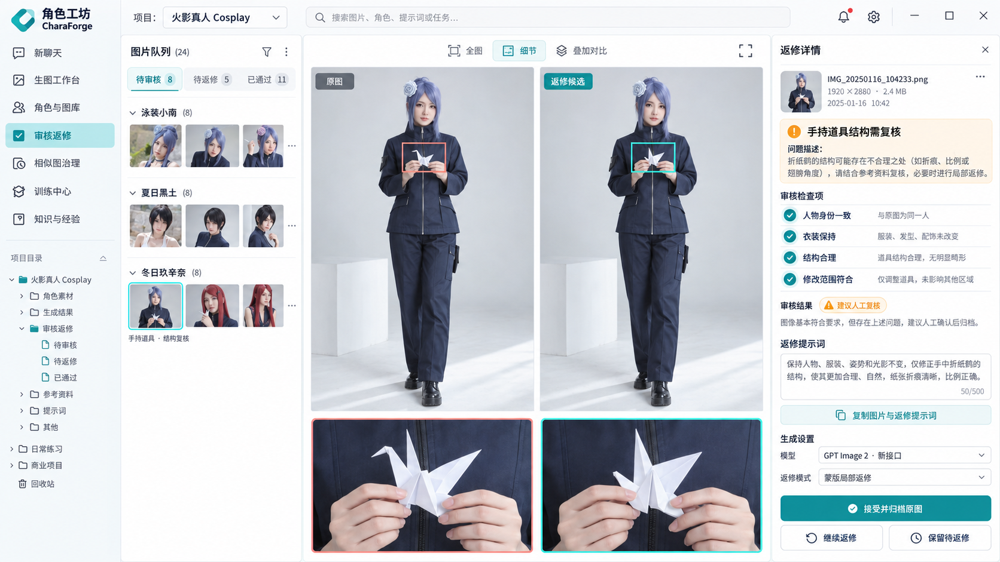
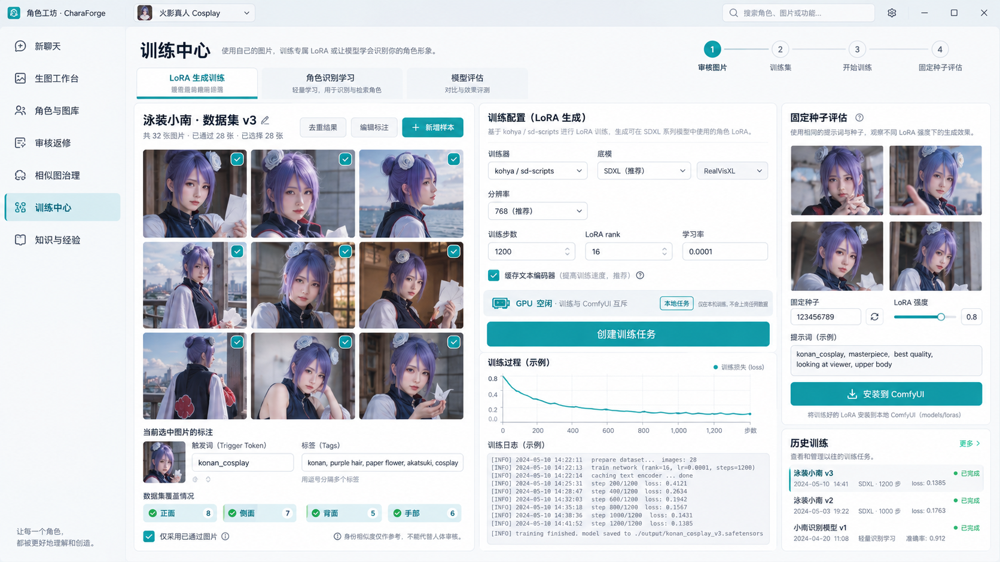

<!doctype html>
<html lang="zh-CN"><meta charset="utf-8"><meta name="viewport" content="width=device-width,initial-scale=1">
<title>角色工坊 · 融合界面设计</title>
<style>
*{box-sizing:border-box}body{margin:0;background:#edf4f6;color:#18383c;font:16px 'Segoe UI','Microsoft YaHei',sans-serif}header{padding:22px 4vw;background:#fff;border-bottom:1px solid #d9e6e8}h1{font-size:24px;margin:0 0 8px}p{color:#597075;line-height:1.6;margin:0}nav{display:flex;gap:10px;flex-wrap:wrap;margin-top:20px}button{border:1px solid #c7dadc;background:#fff;color:#254e52;border-radius:8px;padding:10px 18px;font:inherit;cursor:pointer}button[aria-selected=true]{background:#087f86;color:#fff;border-color:#087f86}main{padding:22px 3vw}section[hidden]{display:none}img{display:block;width:100%;height:auto;border-radius:12px;box-shadow:0 8px 25px #223c4410}figcaption{padding:14px 0;color:#536e73;line-height:1.6}figure{margin:0}footer{padding:0 3vw 24px;color:#5e7579;font-size:14px}a{color:#087f86}
</style>
<header><h1>角色工坊 <span style="font-weight:400;color:#678087">CharaForge</span></h1><p>云端与本地生图 · Agent · 角色识别 · 审核返修 · 相似图治理 · 训练闭环</p><nav role="tablist" aria-label="界面设计"><button role="tab" aria-selected="true" aria-controls="generation" id="tab-generation">生图工作台</button><button role="tab" aria-selected="false" aria-controls="review" id="tab-review">审核返修</button><button role="tab" aria-selected="false" aria-controls="training" id="tab-training">训练中心</button></nav></header>
<main>
<section role="tabpanel" id="generation" aria-labelledby="tab-generation"><figure><figcaption>三栏工作台：手动 / Agent，云端 / ComfyUI，角色、姿势、场景、表情与约束独立配置，参考图和最终提示词可复制。</figcaption></figure></section>
<section role="tabpanel" id="review" aria-labelledby="tab-review" hidden><figure><figcaption>审核返修：角色队列、原图与候选、局部证据、蒙版确认、返修提示词复制与归档。此图使用普通服装/纸鹤道具作为界面示例。</figcaption></figure></section>
<section role="tabpanel" id="training" aria-labelledby="tab-training" hidden><figure><figcaption>训练闭环：已通过图片、去重与覆盖、caption、LoRA配置和评估；角色识别学习单独分栏。</figcaption></figure></section>
</main><footer>2026-10-08 · 新接口 GPT Image 2 请求生成 · 实际尺寸 1672×941 · 这是界面概念图，示例人物衣装、数量和参数不替换角色标准，也不代表功能已经实现。<a href="生成记录.json">请求记录</a></footer>
<script>
const tabs=[...document.querySelectorAll('[role=tab]')];function select(tab){for(const item of tabs){const active=item===tab;item.setAttribute('aria-selected',String(active));document.getElementById(item.getAttribute('aria-controls')).hidden=!active}}tabs.forEach((tab,index)=>{tab.addEventListener('click',()=>select(tab));tab.addEventListener('keydown',event=>{if(event.key==='ArrowRight'||event.key==='ArrowLeft'){event.preventDefault();const next=tabs[(index+(event.key==='ArrowRight'?1:tabs.length-1))%tabs.length];select(next);next.focus()}})});
</script></html>
